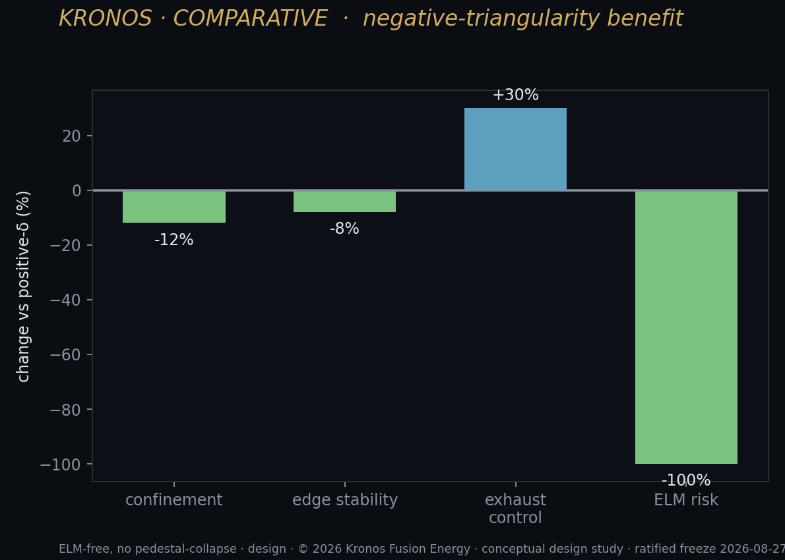
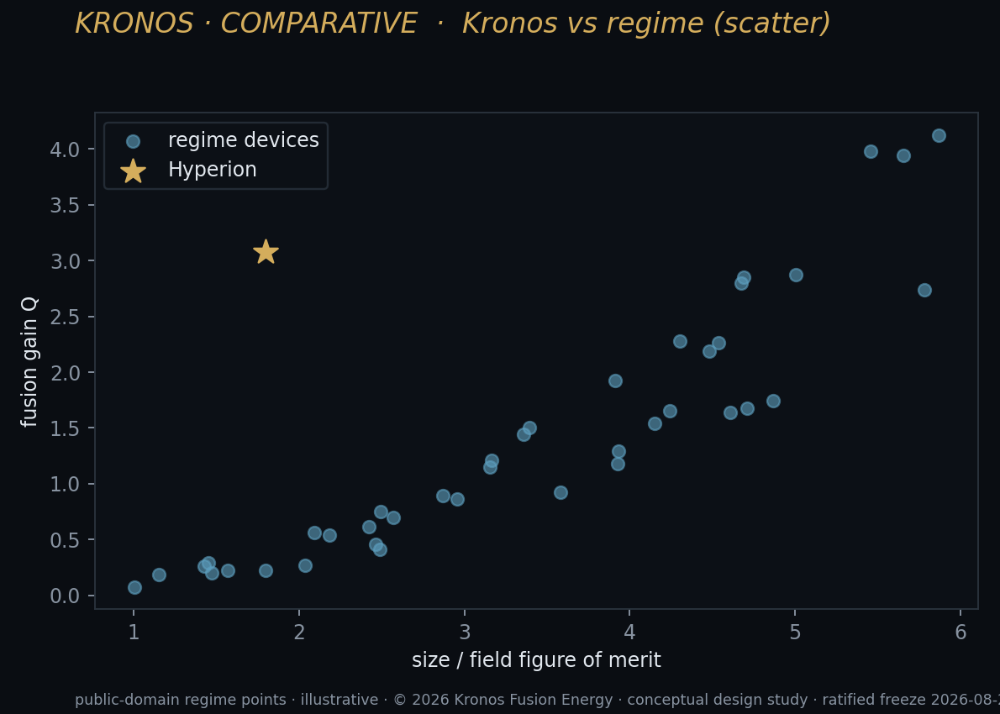

Narration in production — this player goes live when the chapter audio lands.
The Field, Honestly: Where This Approach Fits
I want to spend a chapter doing something that hype rarely lets a founder do: describe the rest of the field fairly, generously, without a single knife hidden behind my back, and then place my own work inside it without flattering myself. Fusion is not a race with one lane and one winner. It is a wide, crowded plain with several roads across it, and every road is being walked by serious, brilliant people who have given whole careers — sometimes whole lives — to the same star we are all chasing, the star we are all trying to bottle. Some of those roads will arrive. Some will not. I do not know for certain which is which, and I promise you that neither does anyone who tells you otherwise with a straight face. What I can do is draw the map honestly — by approach, not by any name — and then show you where our two-machine, materials-first design sits on it, what it borrows from the others, where it diverges, and what it is quietly betting that the rest are not.
This is the chapter where I am most tempted to be triumphant, and most determined not to be. The honest posture is not a decoration on the argument; it is the argument. If our approach is right, it will be right on the merits, and the merits do not need me to disparage anyone else's decades of work. A design that can only look good by making its neighbours look bad is a design I would not trust with a flashlight, let alone a star.
The families of effort
There are, broadly, four families of fusion effort in the world today. They differ in the shape of the machine, the fuel they burn, and the physics they are betting their futures on. Each has genuine strengths, real and hard-won. Each has a genuine problem it has not solved. Let me take them one at a time, and try to be as fair to each as I would want someone to be to me at my most vulnerable.
The great public tokamaks
The first family is the oldest and the largest: the giant, publicly funded, internationally shared tokamaks. These are the cathedral projects of fusion — enormous doughnut-shaped machines, built over decades, funded across borders and across political generations, designed to hold a ring of superheated plasma inside a cage of magnetic fields and burn the easiest fuel we have, deuterium and tritium. Like the medieval cathedrals, they are begun by people who will not live to see them finished, and that is not a flaw in them but a kind of nobility.
Their strength is real and should never be dismissed by anyone who understands what they cost to build. Nearly everything the entire field knows about confining a plasma at reactor conditions, we know because these machines taught us, degree by hard-won degree. They are where the physics of the burning plasma is being nailed down at full scale, with instrumentation and rigor that no small effort can match. When they achieve a milestone, it is a milestone for all of us, because it is measured under conditions closest to a real power reactor. If you want to know whether a plasma will behave the way theory says at the size and temperature of a true burner, these are the machines that answer the question. That is a public good of the highest order, and I am a grateful beneficiary of it — we all are, whether we admit it or not.
Their weakness is equally real, and it is not a physics weakness — it is a weakness of scale, time, and cost. These machines are vast because the conventional-tokamak recipe asks for size: to reach net gain with ordinary magnets and ordinary geometry, you build big, and big is slow and expensive and measured in decades. The timelines stretch across generations of scientists, careers begun and ended inside a single project. And because they burn deuterium and tritium, they inherit the neutron problem in full — most of the energy pours out as fast neutrons that bombard the walls, activate the structure, and force a lifetime of shielding and replacement. The cathedral gets built, and it teaches us the physics, but it is not, by itself, a template for a cheap, mass-produced, clean power plant. It was never trying to be. It was trying to prove the plasma physics for all of humanity, and at that it has largely, magnificently, succeeded.
The compact-tokamak wave

The second family is the one most people picture when they hear "private fusion," and it is the one that broke the field's long spell of waiting. Over the last decade a wave of privately funded efforts has taken the tokamak — the same fundamentally sound doughnut — and asked a sharp, almost impudent question: what if the reason tokamaks have to be so cathedral-sized is simply that their magnets are too weak? Make the magnetic field strong enough and the whole machine can shrink, because confinement improves steeply as the field rises — steeply enough that a modest gain in magnet strength buys a dramatic cut in machine size.
The enabling technology behind this wave is high-temperature superconducting tape — a magnet material that can carry enormous current density and sustain very high fields in a compact coil. It is a genuine breakthrough, one of the real ones, and it changed what is possible for everyone, my own team emphatically included. The strength of this family is speed and capital efficiency of a kind the cathedral projects can never have: smaller machines, faster build cycles, private funding that moves at the pace of conviction rather than treaty, and a credible argument that a commercially relevant tokamak can be built in years rather than decades. I have enormous respect for this wave. It broke the assumption that fusion must always be enormous and always be slow, and it did so with real physics rather than slogans — which, in this field, is the highest compliment I know how to pay.
But this family, for all its speed, still makes one foundational choice that carries a cost it cannot design away: it still burns deuterium and tritium. A high-field compact tokamak is a smaller, faster machine, but it is still, in the end, a machine that produces most of its energy as fast neutrons. The neutron flux, concentrated in a smaller volume, is if anything more punishing per unit of wall — the same fire in a smaller hearth burns the bricks hotter. So the same hard questions return, and they do not go away because the machine is elegant: how long do the materials last, how radioactive does the structure become, how often must components be swapped, and what does all of that do to the cost of a delivered megawatt-hour. These are not reasons to doubt the approach. They are the honest homework the approach still has in front of it, and the best people in it will tell you the same, without flinching.
Strong magnets made the tokamak small. They did not make the neutron go away.
Laser and inertial confinement
The third family takes a completely different path to the same star — a path so different it barely looks like the same field. Instead of holding a thin plasma in place with magnets for a long time, it takes a tiny pellet of fuel and crushes it — with a colossal, precisely timed pulse of laser light or other driver energy — so fast and so hard that it fuses in a flash before it can fly apart. Magnetic confinement holds a diffuse plasma steady for seconds; inertial confinement lets the fuel's own inertia hold it together for the single nanosecond that matters, and in that nanosecond lights a star the size of a peppercorn.
This family earned the field's most famous single result: the laboratory demonstration that a fusion reaction can release more energy than the driver delivered to the fuel capsule itself. That was a real and historic threshold, a line humanity had never crossed, and it silenced a certain kind of doubt for good. The strength here is that the physics of ignition — the actual lighting of the fire — has been demonstrated in a way that is very hard to argue with, and the approach sidesteps the steady-state confinement problem entirely by not trying to hold anything steady at all.
The weakness is the vast gap between a spectacular single shot and a power plant that runs your city. A plant must do this not once but many times a second, every second, for years on end. It must manufacture flawless fuel capsules at enormous volume and low cost, fire drivers that are efficient enough that the plant produces far more energy than the whole facility consumes — not just more than reached the capsule, which is a very different and much harder ledger — and survive the repeated micro-explosions at its heart without shaking itself to pieces. Each of those is a formidable engineering program in its own right, any one of which could consume a decade. The fire has been lit, and that is no small thing. Turning a controlled series of tiny explosions into a dispatchable generator is the long road that remains, and the people walking it know exactly, unsentimentally, how long it is.
The alternative concepts
The fourth family is not one approach but a whole teeming ecosystem of them — the configurations that are neither the mainstream tokamak nor the laser. I group them together not because they are alike, for they are not, but because each represents a bet that the dominant path left something valuable on the table, some door the crowd walked past.
There are the mirror machines: straight magnetic bottles that trap plasma between high-field magnetic plugs at each end, rather than bending it into a ring. Their appeal is geometric simplicity, natural suitability for steady operation, and an openness to fuels and conversion schemes that a closed doughnut resists; their historic difficulty was holding the plasma against losses out the open ends. There are the stellarators: tokamak cousins that twist the confining field with intricately shaped external coils — sculptures of wire and math — instead of relying on a current driven through the plasma. They trade fearsome manufacturing complexity for the great prize of intrinsically steady, disruption-resistant operation. There are the field-reversed configurations and other compact-toroid schemes: elegant, self-organized plasma rings that carry their own field and promise very high efficiency in a small volume, if their stability and confinement can be tamed. And there are the pinches and their modern descendants, which use the plasma's own currents to squeeze and confine it, chasing radical simplicity and low cost — betting that clever physics can do the work of expensive magnets.
The shared strength of this family is imagination disciplined by physics — the best kind, the kind that dreams inside the rules. Each of these concepts exists because someone looked hard at a real limitation of the mainstream and asked whether a different geometry could dissolve it rather than fight it. The shared weakness is maturity: they have, in general, far less cumulative experimental time behind them than the mainstream tokamak, so more of their key questions remain open, more of their promises untested. That is a reason for humility, not dismissal. More than once in the history of technology, the approach that looked "behind" turned out to be behind on funding and attention, not on merit — waiting, like a mirror waiting for the right fuel, for its moment to arrive.
Where our approach sits

Now I can place our own work honestly, because you can only understand a design by the company it keeps and the company it deliberately leaves behind.
We build two machines, not one. A breeder — a compact spherical tokamak that burns deuterium and tritium — and a burner — a tandem-mirror generator that burns deuterium and helium-3. I have told the story elsewhere in this book of why the physics forced us to split the job in two, why one machine could not honestly be both foundry and power plant; here I only want to locate that choice on the map I have just drawn, and to be candid about what is borrowed and what is genuinely, defensibly different.
Look at the breeder and you will see how much we owe the other families — how little of it is ours alone. It is a tokamak, which means it stands on the half-century of plasma physics the great public machines paid for in money and patience. It is a compact tokamak wound with high-temperature superconducting magnets — its design basis carries a very high peak field in the coil — which means it rides the very same superconducting wave that the private compact-tokamak family opened up for all of us. We did not invent that road. We are grateful to be on it. If those families had not done their work, ours would be flatly impossible; we would be dreaming, not building.
Look at the burner and you will see the debt to the alternative-concepts family, the debt to the road less travelled. It is a tandem mirror — a straight magnetic bottle with high-field end plugs, reaching a peak field near 26.49 tesla at the plug — a direct descendant of the mirror lineage that the mainstream once set aside as a dead end. We picked it up not out of nostalgia, not to rescue an old idea for sentiment's sake, but because, once you decide to burn a clean fuel, the open geometry is the right shape for the job in a way the closed doughnut simply is not.
It is worth saying why the shape follows from the fuel, because this is the crux of the whole two-machine logic and the place where the design stops being an assembly of borrowed parts and becomes an argument. Deuterium and helium-3 is a much harder reaction to ignite than deuterium and tritium — it wants higher temperatures, and it rewards you, in exchange for that difficulty, with energy carried by charged particles rather than neutrons. Now follow the logic where it leads: if your fuel's payoff is charged particles, you want a machine whose geometry lets you catch those particles and steer them toward electricity directly, and an open-ended magnetic bottle does exactly that. The charged exhaust streams out the ends, straight into a direct-conversion train, instead of being trapped forever circling a closed ring where its energy can only be harvested as heat. The mirror's historic weakness — that plasma leaks out the ends — becomes, for this fuel, the very feature you want, provided you can plug the ends hard enough with high-field magnets to hold the plasma long enough to burn. That is what the tandem mirror's end plugs are for, and it is why the burner reaches for such extreme fields at its throats. The mainstream set the mirror aside decades ago because, for the easy D–T fuel, a closed torus confined better — and they were right, for that fuel. We picked it back up because, for the clean fuel we actually want to burn, the mirror's open geometry is not a handicap to be overcome but the shape the physics is quietly asking for. The lineage was never wrong. It was waiting for the fuel that suited it, the way a key waits in a drawer for the lock it fits.
So what actually diverges? Four things, and I want to name each one plainly and without varnish, because they are the substance of the bet — the part that is genuinely ours.
What we diverge on
First: fuel before power. Almost every other effort in every family is trying, ultimately, to build a machine that makes electricity, because electricity is the prize everyone can see. We decided the near-term product of fusion is not electricity at all — it is fuel and materials. Our breeder is a foundry, not a power station. Its job is to make tritium, to make helium-3, and to pour out 14-MeV neutrons that have real industrial value, with its tritium loop held deliberately just above replacement (breeding lever 1.03–1.20). I will say the uncomfortable part out loud, as I do throughout this book because burying it would poison everything else: the breeder is net-negative on electricity — on the order of tens of megawatts in the red. That is not a defect we are hiding in a footnote. It is the design, chosen on purpose. We chose to build the fuel factory first and let it fund the power plant, rather than demand that one machine be both at once and be brilliant at neither. Most of the field is betting on the power plant. We are betting that whoever owns the fuel owns the decade before the power plants arrive — and that owning a decade is worth more than owning a headline.
Second: a genuinely low-neutron burn. The mainstream tokamak and the entire compact-tokamak wave burn deuterium and tritium and inherit the neutron in full, with all its slow violence to the walls. We push the neutron problem upstream into the breeder — where we want neutrons, where neutrons are the whole point and the product — and keep the burner clean. The burner's deuterium–helium-3 reaction runs at a neutron fraction of only about 5.44 percent, a small fraction of what D–T produces. That is the difference between a power plant that slowly destroys its own walls, tithing itself to the neutron year after year, and one that does not. It is the oldest dream in fusion, aneutronic-leaning power, the dream the field has chased since its youth — and we reach for it not by wishing the neutron away inside a single heroic machine but by dividing the labor between two, sending the neutrons where they are welcome.
Third: direct conversion. Because the burner's energy comes out mostly as charged particles rather than neutrons, we can catch that energy and turn it toward electricity directly — collecting the current at the source — rather than boiling water and running a steam turbine the way nearly every thermal plant on Earth still does: fission, coal, gas, and most fusion designs alike, all of them, at bottom, elaborate kettles. Direct energy conversion is not available to a machine whose output is chiefly fast neutrons; it is a prize you can only claim if you have first committed to a clean, charged-particle fuel. It is a divergence that only becomes possible because of the first two — one good choice unlocking the next, the way real design compounds.
Fourth: a deliberately conservative timeline. This is the least glamorous divergence and, I have come to believe, the most important of all four. Much of the field — understandably, under the relentless pressure of funding and enthusiasm and the human hunger for good news — reaches for the nearest credible date it can defend. We do the opposite, on purpose and against our own short-term interest. Our public promise is framed within forty years, with an internal plan that lands earlier, precisely so that we are structurally unable to over-promise even if we wanted to. The staged-road chapter lays out the full ladder of dates — design closed now, first breeder construction, first tritium, the first test burner, a commercial burner fleet, and the arrival of lunar helium-3 that finally opens the fuel economics — and I will not restate that ladder here; what matters for the map is that every rung of it is set later than the most optimistic version I could sell you if I were trying to sell you something. That is on purpose. Under-promising is not modesty, and it is not timidity. It is a design constraint, load-bearing as any magnet.
The magnet, the common inheritance
Before I state the bets, I want to dwell on the one piece of technology that runs underneath nearly every modern approach on this map, ours included, because it is the clearest example of how little of this grand enterprise is any one team's private achievement — how much of it is a gift we all inherited.
Everything fast and compact in fusion today rides on high-temperature superconducting tape. The old assumption — the one that made the great public tokamaks so vast, so cathedral-slow — was that magnetic fields were limited by what conventional superconductors could sustain, and since confinement improves steeply with field, weak fields forced enormous machines. High-temperature superconductor broke that assumption clean in half. It carries enormous current density and holds very high fields in a compact coil, and it changed the possibility space for everyone at once, the way a single new material occasionally reorganizes an entire field of engineering. The compact-tokamak wave exists because of it. Our breeder exists because of it: its design basis runs 8 tesla on-axis with a far higher peak in the coil, at a size that would have been simply unreachable a generation ago, the stuff of viewgraphs and wishes. Our burner leans on it even harder, reaching toward a peak field near 26.49 tesla at the end plugs, because a tandem mirror lives or dies on how hard you can squeeze the plasma at its throats.
I dwell on this because it is the honest posture of the whole chapter in miniature, the thesis compressed into a coil of tape. We did not invent the tape. We did not invent the tokamak, or the mirror, or the physics of the burning plasma. We are standing on an inheritance that the public machines, the private wave, and the materials scientists built — standing on shoulders, as the old phrase has it, though the people whose shoulders they are will mostly go unthanked by history. The most our design can claim is to have arranged those inherited pieces into a configuration nobody else chose to arrange them in. A design that pretended otherwise — that dressed up a shared enabling technology as a proprietary breakthrough, that claimed the inheritance as invention — would be exactly the kind of design I told you at the outset I would not trust with a match. The magnet is common ground. What we did with it is the only thing that is ours, and it is enough.
The software machine
There is a fifth divergence I left out of the four above, because it does not fit the geometry-and-fuel frame of the others, and it is where I am willing to make the strongest near-term claim in this entire book — the one place I will let myself sound certain. Most of the field treats control software as an accessory to the physics, a technician bolted on after the real work. We treat it as part of the machine, as load-bearing as the magnets.
A fusion plasma is a violently nonlinear system that must be held at a hundred million degrees inside a magnetic cage, and it fails fast — disruptions and instabilities can develop in milliseconds, far faster than any human operator can even perceive, let alone react to. The traditional answer is hand-tuned control and conservative operating margins, a human hand kept nervously near the switch. Ours is a machine-learning control layer, and unlike the quantum-computing promises the field is so fond of making, this is not a someday capability waiting on a breakthrough. It works now, and it works with numbers I can state and stand behind — the safety clamp, for one, caught every one of three thousand injected limit violations, with zero escapes. I will not reprint the whole ledger here; the AI chapter carries the full receipts — the surrogate speed-ups, the disruption scores, the quench-precursor warnings, and, in the same discipline, the honest misses set down beside the wins.
I keep that discipline here too — every claim shown with its shortfall beside it, because a control layer you cannot check is a control layer you should not believe. The point, in a chapter about where we fit, is that this is a genuine, measurable advantage available today, on hardware that does not yet exist for the plasma but exists entirely for the software — and it is developed with the one external partner named in this book, NVIDIA, whose accelerators run these models. That is a real thing, running now, while the rest of the machine is still being built.
And because I am on the subject of computation, let me repeat the honesty the rest of the field so often skips past when the applause is loudest: quantum computing offers this program no near-term and no near-decade advantage, and I say so plainly, against the constant temptation to imply otherwise and borrow the glamour. What is real is quantum sensing for diagnostics, which is genuinely near and genuinely useful, and quantum-inspired tensor methods that run on ordinary hardware today. The divergence that matters is not a quantum fantasy dressed for a keynote; it is a classical, working, numbers-on-the-table control machine. Treating software as a first-class part of the reactor, rather than a bolt-on afterthought, is a quieter divergence than fuel or geometry — but it is the one already paying off, already earning its place, already real.
What we are betting that others are not
Strip away the machines and the map and the borrowed magnets, and every approach in fusion reduces to a single bet — a wager about which hard problem is the one worth building your whole strategy, your whole company, your whole life around. So let me state ours as plainly as I can, and grant at once, before you can say it, that it may be wrong.
We are betting that the binding constraint on fusion is not, in the end, the plasma. The great public machines are close to settling the plasma physics; the compact-tokamak wave is bringing the magnets; ignition itself has been demonstrated in a laboratory. The plasma, I have come to believe, will be solved — by the field, collectively, sooner than the skeptics believe and perhaps sooner than some of its own champions fear. We are betting that once the plasma is solved, the real constraint, the one left standing when the famous problem falls, becomes materials and fuel: what survives the neutron flux year after year, where the tritium and helium-3 actually come from at scale, and whether the delivered electron is cheap enough to matter to anyone. That is a bet on chemistry and metallurgy and supply chains as much as on physics — an unromantic bet, a bet on the unglamorous back rooms of the enterprise, and a deliberate one made with eyes open.
We are betting, second, that being first to fuel is worth more in the near term than being first to a single triumphant demonstration of net electric power — that a foundry which earns its keep selling materials can fund the slow, patient work of the power fleet, while efforts staking everything on one triumphant power milestone are more fragile than they look under the stage lights, one bad shot away from a crisis.
And we are betting, third, on being boring about time. In a field where the temptation to promise the nearest date is nearly irresistible, where every year brings a new "fusion in a decade," we are betting that the effort which under-promises and compounds quietly, unglamorously, without spending its credibility on a headline, outlives the ones that spend theirs early and loudly.
We are not betting the plasma is hardest. We are betting the plasma gets solved — and that materials, fuel, and honesty about time are what is left.
I could be wrong about all three, and I want that possibility on the record in my own hand. The compact-tokamak wave could reach clean, cheap power on deuterium and tritium faster than I expect, and make our fuel-first patience look like overcaution dressed as wisdom. Ignition could scale to a working inertial plant before our burner fleet is built. One of the alternative concepts I described with such fondness could turn out to have quietly solved the very problem it was long doubted on, in some laboratory not making headlines. If any of that happens, it is a win for the thing all of us actually care about, the thing under all the rivalry — clean power for everyone, for good — and I will be genuinely glad of it, even if it is not our machine that gets there first. That gladness is not a pose. It is the only sane way to feel about a prize this large.
That is the honest map, and the honest posture that goes with it. I have tried to draw every road fairly, without a thumb on the scale for my own, because every road is being walked by people who deserve fairness and because a design that can only look good by making its neighbours look bad is not a design worth your trust or mine. Ours is one road among several good ones, on a plain wide enough for all of them. What follows in this book is simply the case, laid out with the numbers shown and the misses printed, for why I believe it is a road worth building — not the only one, and not a certain one, but an honest one, and, I have staked my life on the wager, a road that reaches the star.